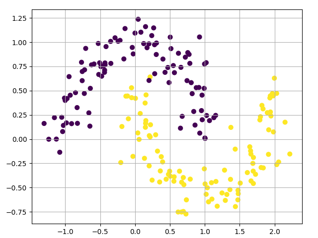
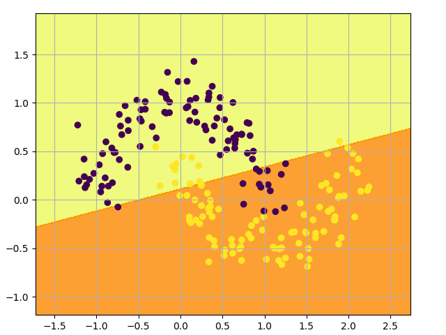
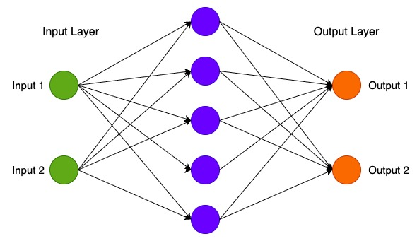

2.2 Points Classification
Created Date: 2025-05-10
In this post we will implement a simple 3-layer neural network from scratch. We won’t derive all the math that’s required, but I will try to give an intuitive explanation of what we are doing. I will also point to resources for you read up on the details.
Here I’m assuming that you are familiar with basic Calculus and Machine Learning concepts, e.g. you know what classification and regularization is. Ideally you also know a bit about how optimization techniques like gradient descent work. If you’re not familiar with any of the above, you can read chapter 1 Tensor and Gradient Basics.
But why implement a Neural Network from scratch at all? Implementing a network from scratch at least once is an extremely valuable exercise. It helps you gain an understanding of how neural networks work, and that is essential for designing effective models.
All code in file simple_dnn_stratch.py, One thing to note is that the code examples here aren’t terribly efficient.
2.2.1 Generating a dataset
Let’s start by generating a dataset we can play with. Fortunately, scikit-learn has some useful dataset generators, so we don’t need to write the code ourselves. We will go with the make_moons function.
X, y = sklearn.datasets.make_moons(200, noise=0.15)
pyplot.scatter(X[:, 0], X[:, 1], s=40, c=y)
pyplot.grid(True)
pyplot.subplots_adjust(left=0.08, right=0.92, top=0.96, bottom=0.06)
pyplot.show()
The dataset we generated has two classes, plotted as red and blue points. You can think of the blue dots as male patients and the red dots as female patients, with the x- and y- axis being medical measurements.
Our goal is to train a Machine Learning classifier that predicts the correct class (male of female) given the x- and y- coordinates. Note that the data is not linearly separable, we can’t draw a straight line that separates the two classes. This means that linear classifiers, such as Logistic Regression, won’t be able to fit the data unless you hand-engineer non-linear features (such as polynomials) that work well for the given dataset.
In fact, that’s one of the major advantages of Neural Networks. You don’t need to worry about feature engineering. The hidden layer of a neural network will learn features for you.
2.2.2 Logistic Regression
To demonstrate the point let’s train a Logistic Regression classifier. It’s input will be the x- and y-values and the output the predicted class (0 or 1). To make our life easy we use the Logistic Regression class from scikit-learn.
# Train the logistic regression classifier.
clf = sklearn.linear_model.LogisticRegressionCV()
clf.fit(X, y)
decision_boundary.plot_single(X, y, lambda x: clf.predict(x))
The graph shows the decision boundary learned by our Logistic Regression classifier. It separates the data as good as it can using a straight line, but it’s unable to capture the "moon shape" of our data.
2.2.3 Training a Neural Network
Let’s now build a 3-layer neural network with one input layer, one hidden layer, and one output layer. The number of nodes in the input layer is determined by the dimensionality of our data, 2. Similarly, the number of nodes in the output layer is determined by the number of classes we have, also 2. (Because we only have 2 classes we could actually get away with only one output node predicting 0 or 1, but having 2 makes it easier to extend the network to more classes later on). The input to the network will be x- and y- coordinates and its output will be two probabilities, one for class 0 ("female") and one for class 1 ("male"). It looks something like this:

We can choose the dimensionality (the number of nodes) of the hidden layer. The more nodes we put into the hidden layer the more complex functions we will be able fit. But higher dimensionality comes at a cost. First, more computation is required to make predictions and learn the network parameters. A bigger number of parameters also means we become more prone to overfitting our data.
How to choose the size of the hidden layer? While there are some general guidelines and recommendations, it always depends on your specific problem and is more of an art than a science. We will play with the number of nodes in the hidden later later on and see how it affects our output.
We also need to pick an activation function for our hidden layer. The activation function transforms the inputs of the layer into its outputs. A nonlinear activation function is what allows us to fit nonlinear hypotheses. Common chocies for activation functions are tanh, the sigmoid function, or ReLUs. We will use tanh, which performs quite well in many scenarios. A nice property of these functions is that their derivate can be computed using the original function value. For example, the derivative of \(tanh(x)\) is \(1 - {tanh}^2(x)\). This is useful because it allows us to compute \(tanh(x)\) once and re-use that same value later to get the derivative.
Because we want our network to output probabilities, the activation function for the output layer will be the softmax, which is a way to convert raw scores to probabilities. If you’re familiar with the logistic function you can think of softmax as its generalization to multiple classes.
2.2.3.1 How our network makes predictions
Our network makes predictions using forward propagation, which is just a bunch of matrix multiplications and the application of the activation function(s) we defined above. If x is the 2-dimensional input to our network then we calculate our prediction \(\hat y\)(also two-dimensional) as follows:
\(z_1 = xW_1 + b_1\)
\(a_1 = tanh(z_1)\)
\(z_2 = a_1W_2 + b_2\)
\(a_2 = \hat{y} = softmax(z_2)\)
\(z_i\) is the input of layer \(i\) and \(a_i\) is the output of layer \(i\) after applying the activation function. \(W_1, b_1, W_2, b_2\) are parameters of our network, which we need to learn from our training data. You can think of them as matrices transforming data between layers of the network.
Looking at the matrix multiplications above we can figure out the dimensionality of these matrices. If we use 500 nodes for our hidden layer then \(W_1 \in \mathbb{R}^{2 \times 500}\) ，\(b_1 \in \mathbb{R}^{500}\) ，\(W_2 \in \mathbb{R}^{500 \times 2}\) ， \(b_2 \in \mathbb{R}^{2}\). Now you see why we have more parameters if we increase the size of the hidden layer.
2.2.3.2 Learning the Parameters
Learning the parameters for our network means finding parameters \((W_1, b_1, W_2, b_2)\) that minimize the error on our training data. But how do we define the error? We call the function that measures our error the loss function.
A common choice with the softmax output is the categorical cross-entropy loss (also known as negative log likelihood). If we have \(N\) training examples and \(C\) classes then the loss for our prediction \(\hat{y}\) with respect to the true labels \(y\) is given by:
The formula looks complicated, but all it really does is sum over our training examples and add to the loss if we predicted the incorrect class. The further away the two probability distributions \(y\) (the correct labels) and \(\hat{y}\) (our predictions) are, the greater our loss will be. By finding parameters that minimize the loss we maximize the likelihood of our training data.
We can use gradient descent to find this minimum. We will implement the most vanilla version of gradient descent, also called batch gradient descent with a fixed learning rate. Variations such as SGD (stochastic gradient descent) or minibatch gradient descent typically perform better in practice. So if you are serious you’ll want to use one of these, and ideally you would also decay the learning rate over time.
As an input, gradient descent needs the gradients (vector of derivatives) of the loss function with respect to our parameters: \(\frac{\partial{L}}{\partial{W_1}}, \frac{\partial{L}}{\partial{b_1}}, \frac{\partial{L}}{\partial{W_2}}, \frac{\partial{L}}{\partial{b_2}}\). To calculate these gradients we use the famous backpropagation algorithm, which is a way to efficiently calculate the gradients starting from the output.
Applying the backpropagation formula we find the following (just trust me on this for now):
\(\delta_3 = \hat{y} - y\)
\(\delta_2 = (1 - {tanh}^2z_1) \cdot \delta_3 {W_2}^{\top}\)
\(\frac{\partial{L}}{\partial{W_2}} = {a_1}^{\top} \delta_3\)
\(\frac{\partial{L}}{\partial{W_2}} = \delta_3\)
\(\frac{\partial{L}}{\partial{W_1}} = x^{\top}\delta_2\)
\(\frac{\partial{L}}{\partial{b_1}} = \delta_2\)
2.2.3.3 Implementation
Now we are ready for our implementation. We start by defining some useful variables and parameters for gradient descent:
num_examples = len(X) # training set size
nn_input_dim = 2 # input layer dimensionlity
nn_output_dim = 2 # output layer dimensionality
# gradient descent parameters
epsilon = 0.01 # learning rate fro gradient descent
reg_lambda = 0.01 # regularization lengthFirst let’s implement the loss function we defined above. We use this to evaluate how well our model is doing:
# Helper function to evaluate the total loss on the dataset.
def calculate_loss(model):
W1, b1, W2, b2 = model['W1'], model['b1'], model['W2'], model['b2']
# Forward propagation to calculate our predictions.
z1 = X.dot(W1) + b1
a1 = numpy.tanh(z1)
z2 = a1.dot(W2) + b2
exp_scores = numpy.exp(z2)
probs = exp_scores / numpy.sum(exp_scores, axis=1, keepdims=True)
# Calculating the loss
correct_logprobs = -numpy.log(probs[range(num_examples), y])
data_loss = numpy.sum(correct_logprobs)
# Add regulatization term to loss (optional)
data_loss += reg_lambda / 2 * (numpy.sum(numpy.square(W1)) + numpy.sum(numpy.square(W2)))
return 1.0 / num_examples * data_lossWe also implement a helper function to calculate the output of the network. It does forward propagation as defined above and returns the class with the highest probability.
def predict(model, x):
W1, b1, W2, b2 = model['W1'], model['b1'], model['W2'], model['b2']
# Forward propagation
z1 = x.dot(W1) + b1
a1 = numpy.tanh(z1)
z2 = a1.dot(W2) + b2
exp_scores = numpy.exp(z2)
probs = exp_scores / numpy.sum(exp_scores, axis=1, keepdims=True)
return numpy.argmax(probs, axis=1)Finally, here comes the function to train our Neural Network. It implements batch gradient descent using the backpropagation derivates we found above.
# This function learns parameters for the neural network and returns the model.
# - nn_hdim: Number of nodes in the hidden layer
# - num_passes: Number of passes through the training data for gradient descent
# - print_loss: If True, print the loss every 1000 iterations
def build_model(nn_hdim, num_passes=2000, print_loss=False):
# Initialize the parameters to random values. We need to learn these.
numpy.random.seed(0)
W1 = numpy.random.randn(nn_input_dim, nn_hdim) / numpy.sqrt(nn_input_dim)
b1 = numpy.zeros((1, nn_hdim))
W2 = numpy.random.randn(nn_hdim, nn_output_dim) / numpy.sqrt(nn_hdim)
b2 = numpy.zeros((1, nn_output_dim))
# This is what we return at the end
model = {}
# Gradient descent. For each batch...
for i in range(0, num_passes):
# Forward propagation
z1 = X.dot(W1) + b1
a1 = numpy.tanh(z1)
z2 = a1.dot(W2) + b2
exp_scores = numpy.exp(z2)
probs = exp_scores / numpy.sum(exp_scores, axis=1, keepdims=True)
# Backpropagation
delta3 = probs
delta3[range(num_examples), y] -= 1
dW2 = (a1.T).dot(delta3)
db2 = numpy.sum(delta3, axis=0, keepdims=True)
delta2 = delta3.dot(W2.T) * (1 - numpy.power(a1, 2))
dW1 = numpy.dot(X.T, delta2)
db1 = numpy.sum(delta2, axis=0)
# Add regularization terms (b1 and b2 don't have regularization terms)
dW2 += reg_lambda * W2
dW1 += reg_lambda * W1
# Gradient descent parameter update
W1 += -epsilon * dW1
b1 += -epsilon * db1
W2 += -epsilon * dW2
b2 += -epsilon * db2
# Assign new parameters to the model
model = { 'W1': W1, 'b1': b1, 'W2': W2, 'b2': b2}
# Optionally print the loss.
# This is expensive because it uses the whole dataset, so we don't want to do it too often.
if print_loss and i % 100 == 0:
print('Loss after iteration ' + str(i) + ': ' + str(round(calculate_loss(model), 4)))
return model2.2.4 Training
Let’s see what happens if we train a network with a hidden layer size of 3.
# Build a model with a 3-dimensional hidden layer
model = build_model(3, print_loss=True)
# Plot the decision boundary
decision_boundary.plot_single(X, y, lambda x: predict(model, x))
pyplot.show()Yay! This looks pretty good. Our neural networks was able to find a decision boundary that successfully separates the classes.
2.2.5 Varying Hidden Size
In the example above we picked a hidden layer size of 3. Let’s now get a sense of how varying the hidden layer size affects the result.
We can see that a hidden layer of low dimensionality nicely captures the general trend of our data. Higher dimensionalities are prone to overfitting. They are “memorizing” the data as opposed to fitting the general shape. If we were to evaluate our model on a separate test set (and you should!) the model with a smaller hidden layer size would likely perform better due to better generalization. We could counteract overfitting with stronger regularization, but picking the a correct size for hidden layer is a much more economical solution.
2.2.6 Torch Implement
File simple_dnn_torch.py